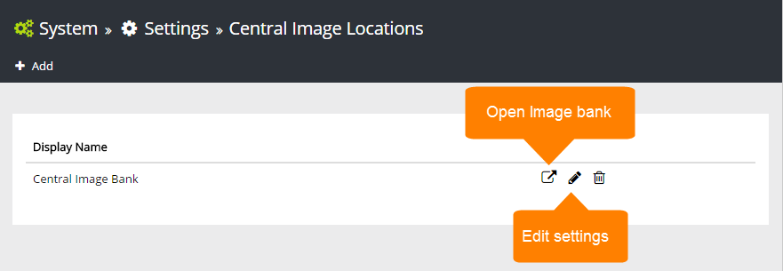

Set central image locations for the editors to use. Normally the editors can't upload images to a Central Image Location, or set image renditions, only use images from there.
One or more locations can be set up in the list.

To add a new Central Image Location, click "Add" and use the following settings: